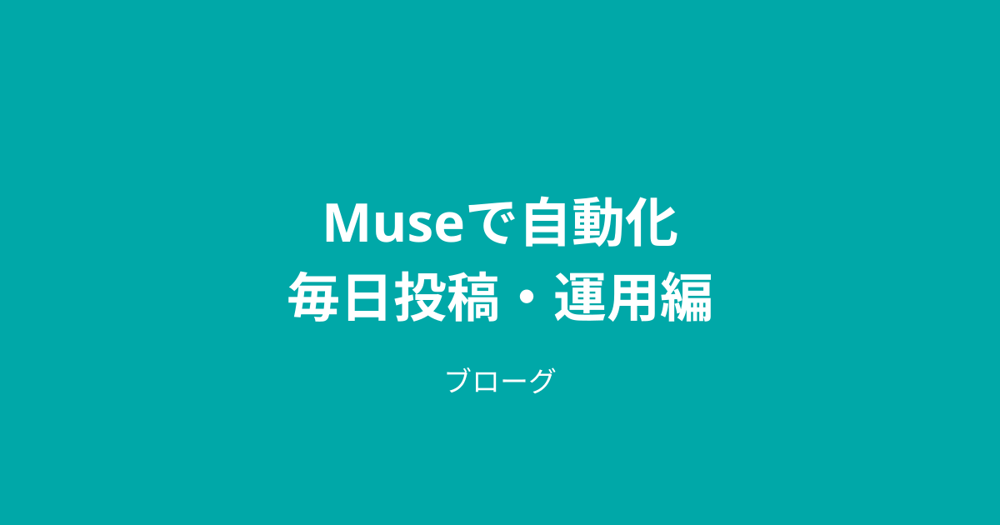

Museで毎日投稿を自動化｜SNSとブログの運用を任せる方法

目次
※本記事はPRを含みます。紹介しているサービス・商品のリンクから登録や購入があった場合、運営者に報酬が発生することがあります。
はじめに
SNSやブログの毎日投稿、「続けたいけど手が回らない」という悩みは定番です。この記事では、Museに定期作業を任せて、投稿運用を自動化している実例を紹介します。
自動化している作業
- Threads毎日投稿：雑学アカウント「ゆるふわ知恵袋」で、ネタが重ならないよう毎日1件。リンクを載せるときは直前に#PRを付けるルールまで徹底
- 楽天ROOM毎日投稿：楽天市場から自分で商品を探して3件投稿＋フォローバック。口コミ評価⭐4以上などの選定ルール付き
- note毎日記事：月・水・金は公開、他の曜日は下書きまで。テーマは暮らしの工夫やおすすめ紹介をローテーション
- 運用ダッシュボード：各サービスの状況を毎朝自動で再確認して更新
うまくいくルール作り
自動化で大事なのは「やること」より「やらないこと」を決めること。たとえば「宣伝だけの投稿は連続させない」「他人の投稿から商品を持ってこない」「取り返しのつかない操作は確認する」といった線引きを最初に決めておくと、安心して任せられます。
自分も始めてみたい方へ
まとめ
毎日コツコツ型の作業こそ、AIエージェントの得意分野。「続ける仕組み」を先に作ってしまうのが、運用を長持ちさせるコツです。